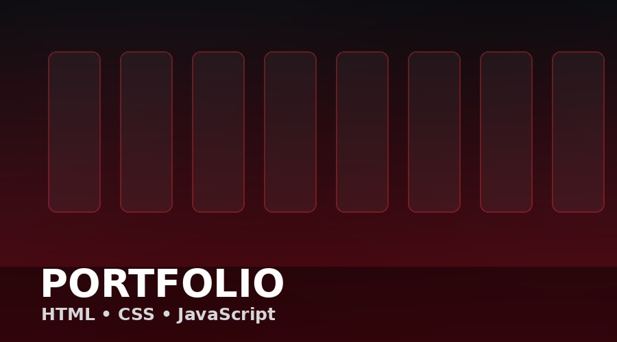
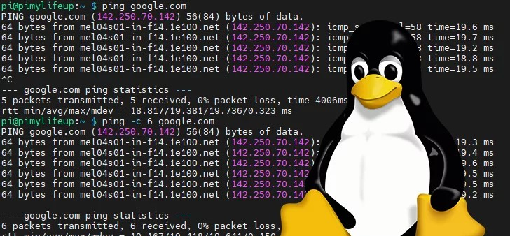
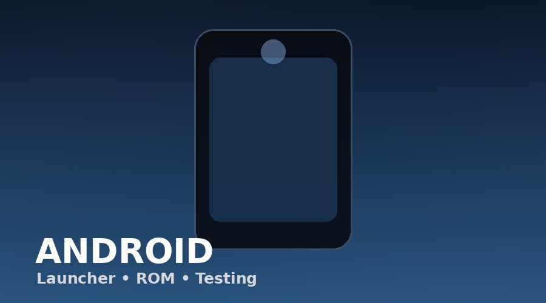
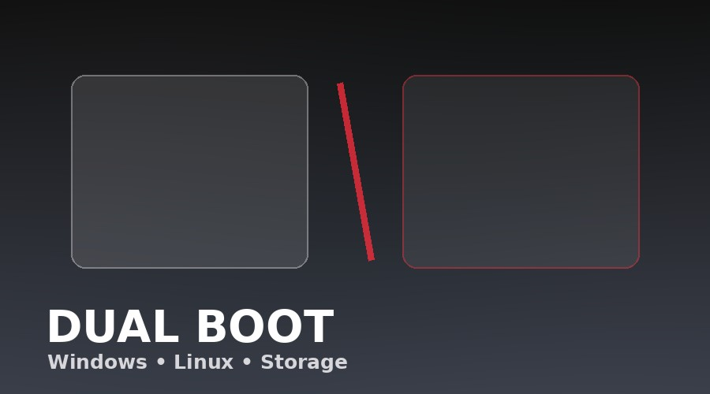
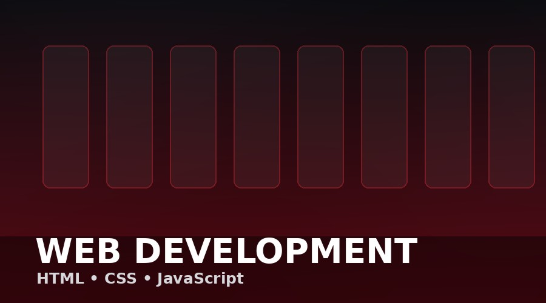
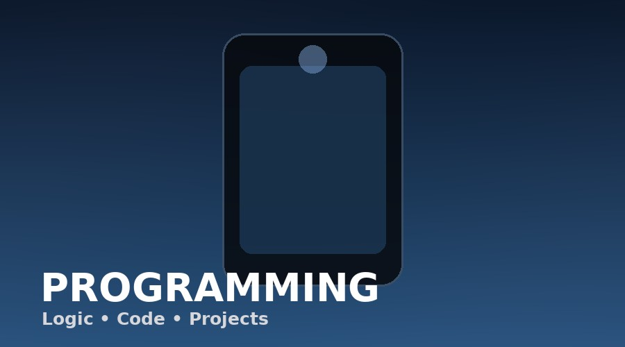
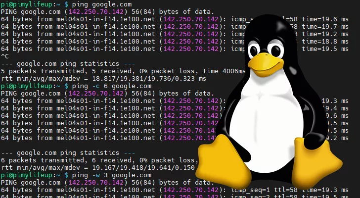
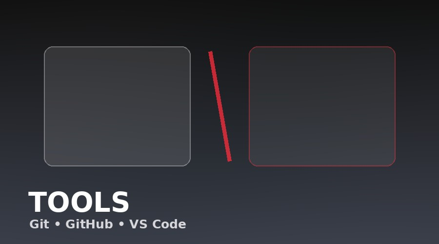

Featured profile
ZIDAN AZKA
I build things, break things, fix them again, and learn something every time. This is my personal space for web development, programming, Linux, and computer experiments.
Featured Projects

Web01Personal Profile
HTML, CSS, JavaScript and responsive UI.

Linux02Linux Experiments
Systems, terminal, configuration and testing.
 Gaming03
Gaming03Minecraft Server
Self-hosting, PaperMC and networking experiments.

Android04Android Experiments
Launcher tweaks, ROM research and mobile testing.

Systems05Dual Boot Setup
Windows and Linux partitioning experiments.
About Me
I'm Zidan, a student who likes computers, coding, Linux, web design and figuring out why something refuses to work five minutes before it should.
“ Small steps every day lead to big results.
Learning by actually building things beats staring at tutorials forever.
Skills & Technologies

Web Development
HTML5, CSS3, responsive layouts and JavaScript basics.

Programming
Logic, problem solving and small coding projects.

Linux
Terminal, configuration, systems and experimentation.

Tools
Git, GitHub, VS Code, Windows, Command Line.
New Skill
Fill in your skill name and details here.